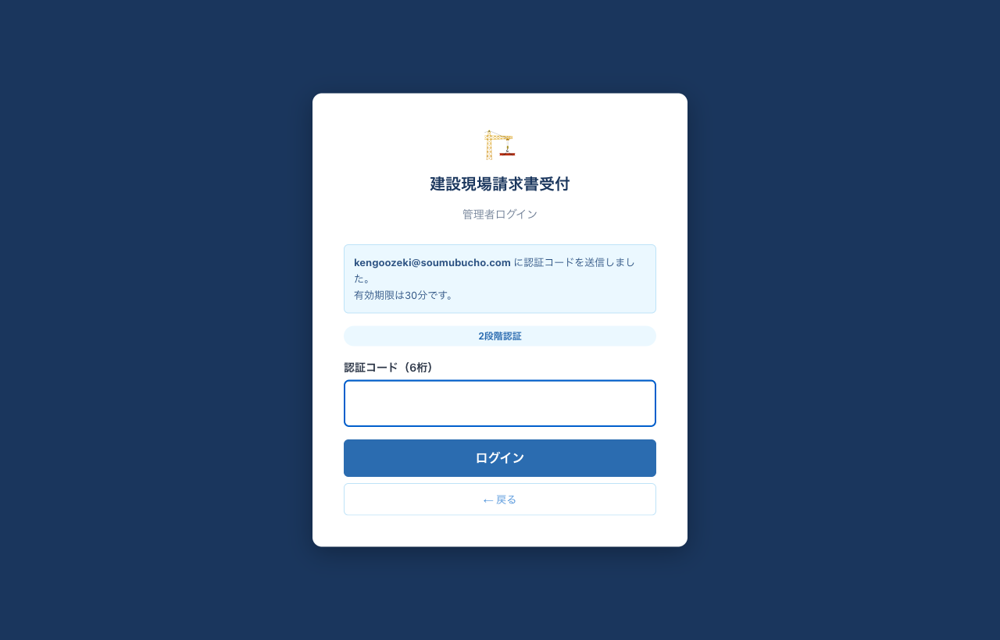

取引先のログイン（OTPのみ）
1
総務から届いた招待メールのログインリンクをクリックします。メールアドレスはURLに埋め込まれているため入力不要です。

取引先への招待メール
2
自動的に6桁の認証コードが登録メールアドレスへ送信されます（有効期限30分）。メールを確認し、コードを入力してログインをクリックします。

取引先ログイン：OTP入力画面
初回ログイン時は、自動的に業者登録フォームに遷移します。会社情報・インボイス番号・振込先口座などを入力して登録を完了してください。2回目以降は請求書登録画面に直接入ります。
管理者のログイン（2段階認証）
所長・部門管理者・役員・総務管理者・システム管理者は、/admin/login からログインします。
1
メールアドレスとパスワードを入力し、次へ（認証コードを送信）をクリック。

管理者ログイン：メール＋パスワード
2
登録メールアドレスに届いた6桁のコードを入力し、ログイン。

管理者ログイン：OTP入力（2段階認証）
初期パスワードでログイン後は、必ず左メニュー下部の「パスワード変更」から8文字以上のパスワードに変更してください。
承認ステータス一覧
| ステータス | 説明 | 次の操作者 |
|---|---|---|
| 提出済 | 取引先が請求書を登録した直後。明細未入力。 | 所長 |
| 所長承認済 | 所長が明細入力＋承認した状態。現場全体ではまだ「部長へ申請」していない可能性あり。 | 所長（申請ボタン） |
| 所長否認 | 所長が否認した状態。コメントが取引先へメール通知される。 | 取引先（再提出） |
| 部長承認済 | 部門管理者が一括承認した状態。 | 役員 |
| 最終承認済 | 役員が承認し編集ロックされた状態。 | — |
「後から追加」マークとは？
所長が「部長へ申請」した後に、取引先が同じ対象月の請求書を追加登録した場合、その請求書には 後から追加 のマークが付きます。所長は通常の承認に加えて受付承認（後から追加）ボタンで受付を行えます。
よくある質問
Q. 認証コード（OTP）のメールが届かない
迷惑メールフォルダを確認してください。それでも届かない場合は、メールアドレスの入力ミス、もしくは取引先管理に登録されていない可能性があります。所長または総務までご連絡ください。
Q. パスワードを忘れた（管理者）
システム管理者に依頼し、ユーザ管理画面からPWボタンでパスワードリセットを実施してもらいます。
Q. 提出した請求書を差し替えたい
取引先からは直接削除／差し替えはできません。所長に依頼し、所長から否認してもらってください。否認後に同じ対象月で再提出できます。
Q. 明細の合計が請求金額と合わないと承認できない
工種ごとの税抜金額を入力したら、合計が請求書の税抜金額と1円単位で一致する必要があります。一致するまで明細を保存はできても承認するボタンは有効になりません。